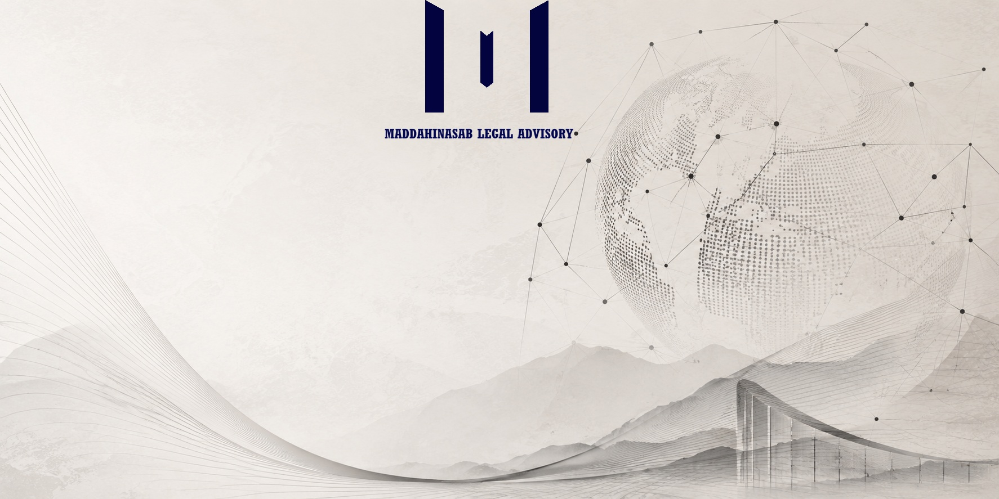

Legal Advisory on Investment, Energy Law & Transitional Risk
Investment Law • Energy Law • Transitional Legal Risk
Academic expertise, white papers, and legal analysis on institutional volatility, regulatory governance, foreign investment, and transitional legal risk in emerging and transforming markets.
About Me
I am a legal scholar and legal risk analyst specializing in investment law, energy law, regulatory governance, and transitional legal risk. My academic and professional work focuses on foreign investment, institutional change, contractual governance, and legal risk assessment in evolving and high-risk markets.
I earned my LLB from Shiraz University, one of Iran's leading institutions for legal education. I subsequently obtained my LLM in Oil and Gas Law from the University of Tehran and completed my Ph.D. in the same field, where my research concentrated on energy contracts, upstream petroleum arrangements, and regulatory frameworks.
During my doctoral studies, I undertook a six-month research stay at the University of Zurich, Switzerland, supported by the Swiss Mercator Foundation. Following completion of my Ph.D., I conducted a three-year postdoctoral research project at Ruhr University Bochum, Germany, funded by the Alexander von Humboldt Foundation and DAAD.
My postdoctoral research expanded into renewable and clean energy governance, examining how contractual transformation can facilitate energy transition. Building upon earlier work in upstream petroleum contracts, I developed comparative approaches to contractual adaptation in clean energy systems and advanced a novel framework for transactional energy justice.
More recently, my work has increasingly engaged questions of legal risk, institutional volatility, sanctions-related exposure, and foreign investment in transitional environments. Through white papers and applied legal analysis, I examine how investors and institutions may navigate legally complex and institutionally evolving markets.
Practice & Research Areas
You may explore my legal advisory work, white papers & reports, and academic publications for further insight into my research and analytical work.
Key Services & Resources
Legal Advisory
Investment law consulting, regulatory due diligence, and risk assessment for foreign investment projects.
Learn More →White Papers & Reports
Applied legal analysis on institutional volatility, sanctions exposure, and transitional legal risk.
View Papers →Academic Publications
Scholarly works on energy contracts, upstream petroleum arrangements, and renewable energy governance.
Explore →Expert Network
Access to specialized legal and regulatory experts for complex investment and energy projects.
Connect →